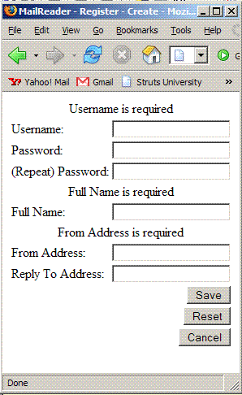

| Work in progress! Preliminary test-builds of Struts 2 are available for download |
Apache Struts is a free open-source framework for creating Java web applications. For more about the Apache Struts project, visit the project web site .
.
Getting Started
The documentation is grouped into three areas.
| Tutorials | Our tutorials are designed to help you get started with the framework ASAP. We offer an all-purpose "Bootstrap" tutorial as well as specialty tutorials on portlets and database access. |
|---|---|
| Guides | Our in-depth guides focus on specific components of the framework, such as the Core framework, Struts Tags, and optional Extensions, as well as migrating from Struts 1 or WebWork 2. |
| FAQs | Our FAQs provide a wide range of rapid-fire "HOWTOs" in question-and-answer format. |
An overview of all three areas is available.
 Visit the Struts 2 Wiki for other community-support resources.
Visit the Struts 2 Wiki for other community-support resources.
Distributions
| The Struts 2 distributions are classified "test-build" quality but are suitable for new development by early adopters. |
For your convenience, a one-stop all distribution is available. Individual elements of the distribution may also be downloaded separately.
| all |
The entire distribution, including all the elements. (43mb) |
|---|---|
| apps |
The example applications, as ready-to-deploy WARs. (22mb) |
| blank |
Just the blank application, ready to deploy as a template for new development. (Also included in apps.) (3mb) |
| docs |
The documentation, as provided on the website. (11mb) |
| lib |
The essential dependencies, including the Struts 2 JARs. (3mb) |
| src |
The source code for the framework, ready to build as a Maven project. (18mb) |
| sj4 |
The Java 1.4 versions of the Struts and XWork JARs (prepared using RetoTranslator). (2mb) |
 If you are migrating from a prior version, see Release Notes 2.0.1 in the Migration Guide.
If you are migrating from a prior version, see Release Notes 2.0.1 in the Migration Guide.
Apache Struts 2 in a Nutshell
Apache Struts 2 helps you create an extensible development environment for your application, based on industry standards and proven design patterns.
Struts is a Model View Controller framework. Struts provides Controller and View components, and integrates with other technologies to provide the Model. The framework's Controller acts as a bridge between the application's Model and the web View.
framework. Struts provides Controller and View components, and integrates with other technologies to provide the Model. The framework's Controller acts as a bridge between the application's Model and the web View.
To make it easier to present dynamic data, the framework includes its own library of markup tags. The tags interact with the framework's validation and internationalization features, to ensure that input is correct and output is localized. The tag library can be used with JSP, FreeMarker, or Velocity.
When a request is received, the Controller invokes an Action class. The Action class examines or updates the application's state by consulting the Model (or, preferably, an interface representing the Model). To transfer data between the Model and the View, properties can be placed on the Action class, or on a plain old JavaBean.
Most often, the Model is represented as a graph of JavaBean objects. The Model should do the "heavy lifting", and the Action will act as a "traffic cop" or adapter. The framework provides sophisticated, automatic type conversion to simplify transfering data between rich domain objects and text-only HTTP requests.
Struts Tags in a nutshell
The Struts Tags help you create rich web applications with a minimum of coding. Often, much of the coding effort in a web application goes into the pages. The Struts Tags reduce effort by reducing code.
<% User user = ActionContext.getContext() %> <form action="Profile!update.action" method="post"> <table> <tr> <td> align="right"<label>First name:</label></td> <td><input type="text" name="user.firstname" value="<%=user.getFirstname() %> /></td> </tr> ... <td> <input type="radio" name="user.gender" value="0" id="user.gender0" <% if (user.getGender()==0) { %> checked="checked" %> } %> /> <label for="user.gender0">Female</label> ...
Looking over the markup, it's easy to see what why Java web development is hard! So far, we've only coded two controls, and there are six more to go! Let's finish the form using Struts Tags.
<s:actionerror/> <s:form action="Profile!update" validate="true"> <s:textfield label="Username" name="username"/> <s:password label="Password" name="password"/> <s:password label="(Repeat) Password" name="password2"/> <s:textfield label="Full Name" name="fullName"/> <s:textfield label="From Address" name="fromAddress"/> <s:textfield label="Reply To Address" name="replyToAddress"/> <s:submit value="Save" name="Save"/> <s:submit action="Register!cancel" value="Cancel" name="Cancel" onclick="form.onsubmit=null"/> </s:form>
In about the same amount of code as two conventional controls, the Struts Tags can a create an entire data-input form with eight controls. Not only is there less code, but the code is easier to read and maintain.

The Struts Tags also support validation and localization as a first-class features. So not only is there less code, but there is more utility.
Struts configuration in a nutshell
A web application uses a deployment descriptor to initialize resources like filters and listeners. The deployment descriptor
and listeners. The deployment descriptor is formatted as a XML
is formatted as a XML document and named web.xml. Likewise, the framework uses a configuration file, named struts.xml, to initialize its own resources. These resources include action mappings, to direct input to server-side Action classes, and result types, to select output pages.
document and named web.xml. Likewise, the framework uses a configuration file, named struts.xml, to initialize its own resources. These resources include action mappings, to direct input to server-side Action classes, and result types, to select output pages.
Here's a typical configuration (struts.xml) for a login workflow:
<struts>
<include file="struts-default.xml"/>
<package name="default" namespace="/" extends="struts-default">
<action name="Logon" class="mailreader2.Logon">
<result name="input">/pages/Logon.jsp</result>
<result name="cancel" type="redirect-action">Welcome</result>
<result type="redirect-action">MainMenu</result>
<result name="expired" type="chain">ChangePassword</result>
</action>
<action name="Logoff" class="mailreader2.Logoff">
<result type="redirect-action">Welcome</result>
</action>
</package>
</struts>
The framework provides general-purpose defaults, so you can start using Struts right away, "out of the box". As needed, you can override any of our defaults in your application's configuration.
Struts is extensible. Very extensible. Every class deployed by the framework is based on an interface. We provide all the base classes an application may ever need, but if we missed something, it's easy to add your own. We provide the general-purpose framework, but you can still write your application your way.